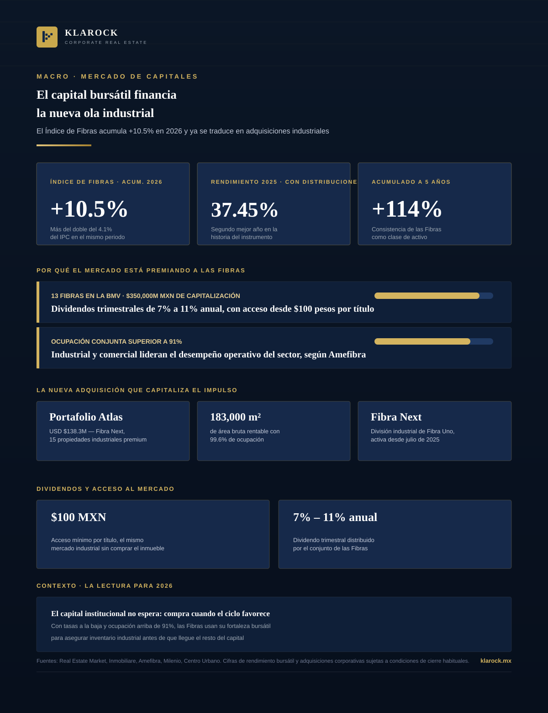

Macro · 2026-09-04
El Índice de Fibras acumula 10.5% en lo que va de 2026, más del doble que el IPC, después de cerrar 2025 con el segundo mejor año de su historia. Ese respaldo bursátil ya se está traduciendo en adquisiciones concretas: Fibra Next acaba de comprar el portafolio industrial Atlas por USD $138.3 millones.

Mientras la conversación sobre bienes raíces en México suele centrarse en renta, ocupación y Cap Rate, hay otra señal que está moviendo capital hacia el sector con la misma fuerza: el desempeño de las Fibras en la Bolsa Mexicana de Valores. Y ese desempeño no se está quedando en el papel —ya está financiando adquisiciones industriales concretas.
La relación es directa: cuando el mercado bursátil premia a las Fibras con rendimientos de dos dígitos y baja de tasas de por medio, esas mismas Fibras salen a comprar más inventario industrial y comercial —no a esperar. La adquisición del portafolio Atlas no es un hecho aislado, es la traducción operativa de un ciclo de capital que hoy favorece al sector: baja de tasas, ocupación por encima de 91% y apetito institucional que compite por el mismo terreno de alta demanda.
En Klarock acompañamos tanto a Fibras e inversionistas institucionales que buscan portafolios industriales y comerciales estabilizados, como a desarrolladores que necesitan identificar el terreno correcto antes de que ese capital llegue primero.
Escríbenos y un socio director te contactará en menos de 24 horas hábiles.
Contactar a un Socio Director